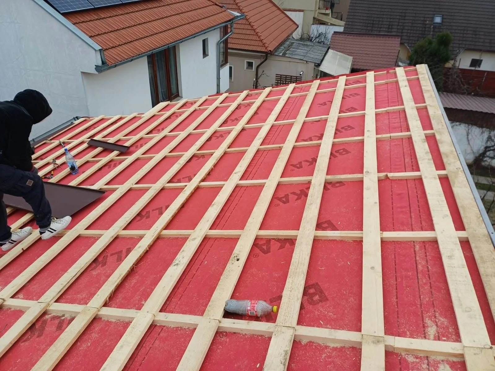
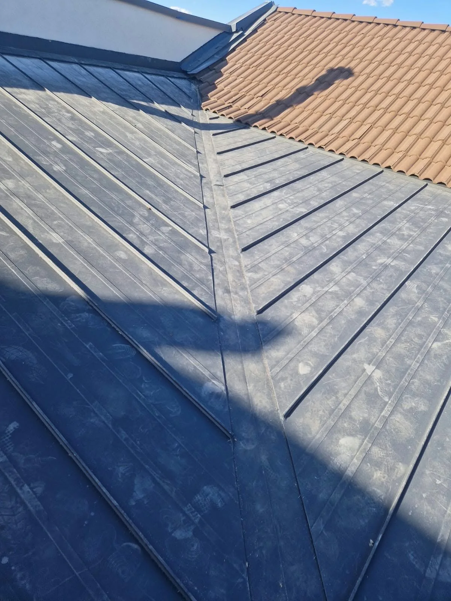
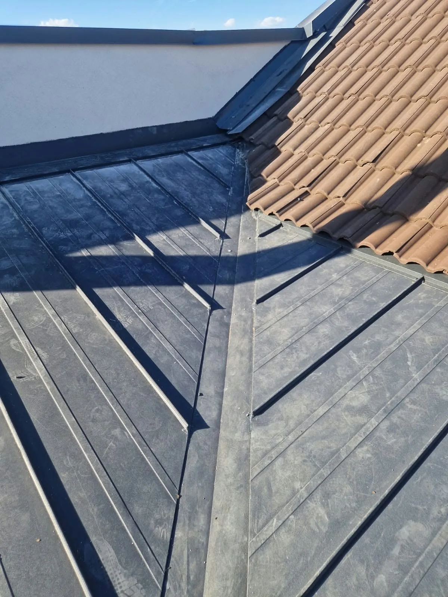

FOTOGRAFIILE NOASTRE
Lucrările noastre vorbesc de la sine.
17 fotografii distincte din arhiva firmei: învelitori, dulgherie, hidroizolații și finisaje.
Fotografiile sunt grupate după ce se vede în ele, nu după proiecte identificate. Locațiile și datele lucrărilor nu sunt confirmate.
Învelitori metalice
9 fotografii


Dulgherie și pregătirea suportului
2 fotografii

Hidroizolații și glafuri
3 fotografii


Racorduri și finisaje
3 fotografii


Ai un proiect? Pregătește cererea de ofertă ↗